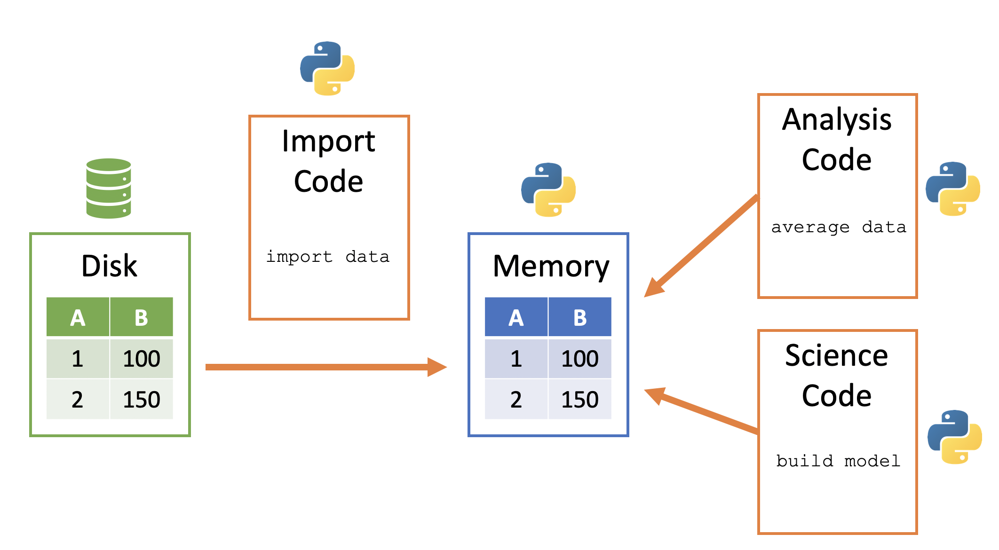

Week 3 ‚Äì Become a Data Detective üîç
Importing, Exploring & Subsetting Data with Pandas
Welcome Data Detectives! üîç
Today’s Mission:
- Learn to import real-world datasets
- Master DataFrame investigation techniques
- Discover the power of data subsetting
First Challenge: Before we start coding, let’s see what manual data exploration feels like, but first…
Discussion: Last Week’s Content
Questions from Week 2?
Let’s take a few minutes to address any questions or concerns from last week before diving into new material.
Share with the Class
Open floor for questions about:
- Variables, data types, and operations
- Jupyter notebooks and Python basics
- Homework assignments or exercises
- Any concepts that felt confusing
- How to approach problem-solving in Python
Don’t hesitate to ask - chances are others have the same questions!
Experience First: The Spreadsheet Challenge
Try This!
Your Task: Find the average number of seats on aircraft manufactured by Embraer in 2004 or later
- Download and open: https://tinyurl.com/42nartw7
- Use Excel, Google Sheets, or any spreadsheet tool
- Try to answer the question using filters, sorting, or manual search
Reflect while you work:
- How long is this taking?
- What if this had 1 million rows?
- Could you easily repeat this process?
Let’s see what people found…
The Real Estate Intern Story
Your First Day on the Job
Scenario: You’re a summer intern at a real estate analytics firm
Your manager says: > “Here’s the raw data for the Ames, Iowa housing market. Let’s start by pulling it into Python and taking a quick look around.”
You double-click the file: Rows and rows of numbers, codes, and column headers you don’t understand.
Where do you even begin?

Tip
Today’s Goal: By the end of class, you’ll have the detective skills to tackle any dataset with confidence!
Getting Data Into Python
The Data Journey: From Disk to Detective Work
Python stores data in memory for fast analysis, but first we need to get it there!
The Process:
- Data sits on your computer’s “disk” (hard drive)
- Python copies the file into memory (RAM)
- You can now investigate and analyze!
Why memory? Lightning fast access, but size limitations for huge datasets

Note
Don’t worry about big data yet - we’ll work with manageable datasets in this class!
File Paths: Finding Your Data üìÅ
The Challenge: Your data lives somewhere on your computer. Python needs directions!
Two Types of Directions:
Absolute Path: Full address from computer’s root
/Users/jane/Desktop/my_project/data/ames.csvRelative Path: Directions from where you are now
../data/ames.csv
data/ames.csvCommon Project Structure:
my_project/
├── notebooks/
│ └── analysis.ipynb ← You are here
└── data/
└── ames.csv ← Your dataTo reach data: ../data/ames.csv
.. means “go up one folder”
Tip
Pro Tip: Use relative paths! They work on any computer when you share your project.
Your Detective Toolkit: Pandas üêº
Meet Pandas: Python’s most powerful tool for working with spreadsheet-like data
Pandas enables:
- Importing data from files like CSV and Excel
- Exploring and understanding datasets
- Cleaning and transforming messy data
- Filtering and subsetting rows/columns
- Analyzing and summarizing information
Tip
ü߆ Think of Pandas as:
Excel + Python power = Reproducible & scalable data analysis
Follow Along
Let’s Import Our First Dataset!
Step 1: Import pandas and load the Ames housing data
Step 2: Take a quick peek at what we imported
We’ve created a DataFrame - Python’s version of a spreadsheet!
| Order | PID | MS SubClass | MS Zoning | Lot Frontage | Lot Area | Street | Alley | Lot Shape | Land Contour | ... | Pool Area | Pool QC | Fence | Misc Feature | Misc Val | Mo Sold | Yr Sold | Sale Type | Sale Condition | SalePrice | |
|---|---|---|---|---|---|---|---|---|---|---|---|---|---|---|---|---|---|---|---|---|---|
| 0 | 1 | 526301100 | 20 | RL | 141.0 | 31770 | Pave | NaN | IR1 | Lvl | ... | 0 | NaN | NaN | NaN | 0 | 5 | 2010 | WD | Normal | 215000 |
| 1 | 2 | 526350040 | 20 | RH | 80.0 | 11622 | Pave | NaN | Reg | Lvl | ... | 0 | NaN | MnPrv | NaN | 0 | 6 | 2010 | WD | Normal | 105000 |
| 2 | 3 | 526351010 | 20 | RL | 81.0 | 14267 | Pave | NaN | IR1 | Lvl | ... | 0 | NaN | NaN | Gar2 | 12500 | 6 | 2010 | WD | Normal | 172000 |
| 3 | 4 | 526353030 | 20 | RL | 93.0 | 11160 | Pave | NaN | Reg | Lvl | ... | 0 | NaN | NaN | NaN | 0 | 4 | 2010 | WD | Normal | 244000 |
| 4 | 5 | 527105010 | 60 | RL | 74.0 | 13830 | Pave | NaN | IR1 | Lvl | ... | 0 | NaN | MnPrv | NaN | 0 | 3 | 2010 | WD | Normal | 189900 |
| ... | ... | ... | ... | ... | ... | ... | ... | ... | ... | ... | ... | ... | ... | ... | ... | ... | ... | ... | ... | ... | ... |
| 2925 | 2926 | 923275080 | 80 | RL | 37.0 | 7937 | Pave | NaN | IR1 | Lvl | ... | 0 | NaN | GdPrv | NaN | 0 | 3 | 2006 | WD | Normal | 142500 |
| 2926 | 2927 | 923276100 | 20 | RL | NaN | 8885 | Pave | NaN | IR1 | Low | ... | 0 | NaN | MnPrv | NaN | 0 | 6 | 2006 | WD | Normal | 131000 |
| 2927 | 2928 | 923400125 | 85 | RL | 62.0 | 10441 | Pave | NaN | Reg | Lvl | ... | 0 | NaN | MnPrv | Shed | 700 | 7 | 2006 | WD | Normal | 132000 |
| 2928 | 2929 | 924100070 | 20 | RL | 77.0 | 10010 | Pave | NaN | Reg | Lvl | ... | 0 | NaN | NaN | NaN | 0 | 4 | 2006 | WD | Normal | 170000 |
| 2929 | 2930 | 924151050 | 60 | RL | 74.0 | 9627 | Pave | NaN | Reg | Lvl | ... | 0 | NaN | NaN | NaN | 0 | 11 | 2006 | WD | Normal | 188000 |
2930 rows × 82 columns
Getting to Know Your Data üßê
Detective Questions: Data Inspection
Think of these as your “data detective questions”:
üîç ‚ÄúHow big is this dataset?‚Äù
üëÄ ‚ÄúWhat does the data look like?‚Äù
| Order | PID | MS SubClass | MS Zoning | Lot Frontage | Lot Area | Street | Alley | Lot Shape | Land Contour | ... | Pool Area | Pool QC | Fence | Misc Feature | Misc Val | Mo Sold | Yr Sold | Sale Type | Sale Condition | SalePrice | |
|---|---|---|---|---|---|---|---|---|---|---|---|---|---|---|---|---|---|---|---|---|---|
| 0 | 1 | 526301100 | 20 | RL | 141.0 | 31770 | Pave | NaN | IR1 | Lvl | ... | 0 | NaN | NaN | NaN | 0 | 5 | 2010 | WD | Normal | 215000 |
| 1 | 2 | 526350040 | 20 | RH | 80.0 | 11622 | Pave | NaN | Reg | Lvl | ... | 0 | NaN | MnPrv | NaN | 0 | 6 | 2010 | WD | Normal | 105000 |
| 2 | 3 | 526351010 | 20 | RL | 81.0 | 14267 | Pave | NaN | IR1 | Lvl | ... | 0 | NaN | NaN | Gar2 | 12500 | 6 | 2010 | WD | Normal | 172000 |
| 3 | 4 | 526353030 | 20 | RL | 93.0 | 11160 | Pave | NaN | Reg | Lvl | ... | 0 | NaN | NaN | NaN | 0 | 4 | 2010 | WD | Normal | 244000 |
| 4 | 5 | 527105010 | 60 | RL | 74.0 | 13830 | Pave | NaN | IR1 | Lvl | ... | 0 | NaN | MnPrv | NaN | 0 | 3 | 2010 | WD | Normal | 189900 |
5 rows × 82 columns
üìä ‚ÄúWhat types of data do I have?‚Äù
<class 'pandas.core.frame.DataFrame'>
RangeIndex: 2930 entries, 0 to 2929
Data columns (total 82 columns):
# Column Non-Null Count Dtype
--- ------ -------------- -----
0 Order 2930 non-null int64
1 PID 2930 non-null int64
2 MS SubClass 2930 non-null int64
3 MS Zoning 2930 non-null object
4 Lot Frontage 2440 non-null float64
5 Lot Area 2930 non-null int64
6 Street 2930 non-null object
7 Alley 198 non-null object
8 Lot Shape 2930 non-null object
9 Land Contour 2930 non-null object
10 Utilities 2930 non-null object
11 Lot Config 2930 non-null object
12 Land Slope 2930 non-null object
13 Neighborhood 2930 non-null object
14 Condition 1 2930 non-null object
15 Condition 2 2930 non-null object
16 Bldg Type 2930 non-null object
17 House Style 2930 non-null object
18 Overall Qual 2930 non-null int64
19 Overall Cond 2930 non-null int64
20 Year Built 2930 non-null int64
21 Year Remod/Add 2930 non-null int64
22 Roof Style 2930 non-null object
23 Roof Matl 2930 non-null object
24 Exterior 1st 2930 non-null object
25 Exterior 2nd 2930 non-null object
26 Mas Vnr Type 1155 non-null object
27 Mas Vnr Area 2907 non-null float64
28 Exter Qual 2930 non-null object
29 Exter Cond 2930 non-null object
30 Foundation 2930 non-null object
31 Bsmt Qual 2850 non-null object
32 Bsmt Cond 2850 non-null object
33 Bsmt Exposure 2847 non-null object
34 BsmtFin Type 1 2850 non-null object
35 BsmtFin SF 1 2929 non-null float64
36 BsmtFin Type 2 2849 non-null object
37 BsmtFin SF 2 2929 non-null float64
38 Bsmt Unf SF 2929 non-null float64
39 Total Bsmt SF 2929 non-null float64
40 Heating 2930 non-null object
41 Heating QC 2930 non-null object
42 Central Air 2930 non-null object
43 Electrical 2929 non-null object
44 1st Flr SF 2930 non-null int64
45 2nd Flr SF 2930 non-null int64
46 Low Qual Fin SF 2930 non-null int64
47 Gr Liv Area 2930 non-null int64
48 Bsmt Full Bath 2928 non-null float64
49 Bsmt Half Bath 2928 non-null float64
50 Full Bath 2930 non-null int64
51 Half Bath 2930 non-null int64
52 Bedroom AbvGr 2930 non-null int64
53 Kitchen AbvGr 2930 non-null int64
54 Kitchen Qual 2930 non-null object
55 TotRms AbvGrd 2930 non-null int64
56 Functional 2930 non-null object
57 Fireplaces 2930 non-null int64
58 Fireplace Qu 1508 non-null object
59 Garage Type 2773 non-null object
60 Garage Yr Blt 2771 non-null float64
61 Garage Finish 2771 non-null object
62 Garage Cars 2929 non-null float64
63 Garage Area 2929 non-null float64
64 Garage Qual 2771 non-null object
65 Garage Cond 2771 non-null object
66 Paved Drive 2930 non-null object
67 Wood Deck SF 2930 non-null int64
68 Open Porch SF 2930 non-null int64
69 Enclosed Porch 2930 non-null int64
70 3Ssn Porch 2930 non-null int64
71 Screen Porch 2930 non-null int64
72 Pool Area 2930 non-null int64
73 Pool QC 13 non-null object
74 Fence 572 non-null object
75 Misc Feature 106 non-null object
76 Misc Val 2930 non-null int64
77 Mo Sold 2930 non-null int64
78 Yr Sold 2930 non-null int64
79 Sale Type 2930 non-null object
80 Sale Condition 2930 non-null object
81 SalePrice 2930 non-null int64
dtypes: float64(11), int64(28), object(43)
memory usage: 1.8+ MBMore Detective Tools
üìã ‚ÄúWhat are my column names?‚Äù
Index(['Order', 'PID', 'MS SubClass', 'MS Zoning', 'Lot Frontage', 'Lot Area',
'Street', 'Alley', 'Lot Shape', 'Land Contour', 'Utilities',
'Lot Config', 'Land Slope', 'Neighborhood', 'Condition 1',
'Condition 2', 'Bldg Type', 'House Style', 'Overall Qual',
'Overall Cond', 'Year Built', 'Year Remod/Add', 'Roof Style',
'Roof Matl', 'Exterior 1st', 'Exterior 2nd', 'Mas Vnr Type',
'Mas Vnr Area', 'Exter Qual', 'Exter Cond', 'Foundation', 'Bsmt Qual',
'Bsmt Cond', 'Bsmt Exposure', 'BsmtFin Type 1', 'BsmtFin SF 1',
'BsmtFin Type 2', 'BsmtFin SF 2', 'Bsmt Unf SF', 'Total Bsmt SF',
'Heating', 'Heating QC', 'Central Air', 'Electrical', '1st Flr SF',
'2nd Flr SF', 'Low Qual Fin SF', 'Gr Liv Area', 'Bsmt Full Bath',
'Bsmt Half Bath', 'Full Bath', 'Half Bath', 'Bedroom AbvGr',
'Kitchen AbvGr', 'Kitchen Qual', 'TotRms AbvGrd', 'Functional',
'Fireplaces', 'Fireplace Qu', 'Garage Type', 'Garage Yr Blt',
'Garage Finish', 'Garage Cars', 'Garage Area', 'Garage Qual',
'Garage Cond', 'Paved Drive', 'Wood Deck SF', 'Open Porch SF',
'Enclosed Porch', '3Ssn Porch', 'Screen Porch', 'Pool Area', 'Pool QC',
'Fence', 'Misc Feature', 'Misc Val', 'Mo Sold', 'Yr Sold', 'Sale Type',
'Sale Condition', 'SalePrice'],
dtype='object')Important
Key Insight: Always inspect your data first! These tools help you understand what you’re working with.
Detective Summary Statistics
üìà ‚ÄúWhat are the basic statistics?‚Äù
The .describe() method gives you a quick statistical summary of your numeric columns:
| Order | PID | MS SubClass | Lot Frontage | Lot Area | Overall Qual | Overall Cond | Year Built | Year Remod/Add | Mas Vnr Area | ... | Wood Deck SF | Open Porch SF | Enclosed Porch | 3Ssn Porch | Screen Porch | Pool Area | Misc Val | Mo Sold | Yr Sold | SalePrice | |
|---|---|---|---|---|---|---|---|---|---|---|---|---|---|---|---|---|---|---|---|---|---|
| count | 2930.00000 | 2.930000e+03 | 2930.000000 | 2440.000000 | 2930.000000 | 2930.000000 | 2930.000000 | 2930.000000 | 2930.000000 | 2907.000000 | ... | 2930.000000 | 2930.000000 | 2930.000000 | 2930.000000 | 2930.000000 | 2930.000000 | 2930.000000 | 2930.000000 | 2930.000000 | 2930.000000 |
| mean | 1465.50000 | 7.144645e+08 | 57.387372 | 69.224590 | 10147.921843 | 6.094881 | 5.563140 | 1971.356314 | 1984.266553 | 101.896801 | ... | 93.751877 | 47.533447 | 23.011604 | 2.592491 | 16.002048 | 2.243345 | 50.635154 | 6.216041 | 2007.790444 | 180796.060068 |
| std | 845.96247 | 1.887308e+08 | 42.638025 | 23.365335 | 7880.017759 | 1.411026 | 1.111537 | 30.245361 | 20.860286 | 179.112611 | ... | 126.361562 | 67.483400 | 64.139059 | 25.141331 | 56.087370 | 35.597181 | 566.344288 | 2.714492 | 1.316613 | 79886.692357 |
| min | 1.00000 | 5.263011e+08 | 20.000000 | 21.000000 | 1300.000000 | 1.000000 | 1.000000 | 1872.000000 | 1950.000000 | 0.000000 | ... | 0.000000 | 0.000000 | 0.000000 | 0.000000 | 0.000000 | 0.000000 | 0.000000 | 1.000000 | 2006.000000 | 12789.000000 |
| 25% | 733.25000 | 5.284770e+08 | 20.000000 | 58.000000 | 7440.250000 | 5.000000 | 5.000000 | 1954.000000 | 1965.000000 | 0.000000 | ... | 0.000000 | 0.000000 | 0.000000 | 0.000000 | 0.000000 | 0.000000 | 0.000000 | 4.000000 | 2007.000000 | 129500.000000 |
| 50% | 1465.50000 | 5.354536e+08 | 50.000000 | 68.000000 | 9436.500000 | 6.000000 | 5.000000 | 1973.000000 | 1993.000000 | 0.000000 | ... | 0.000000 | 27.000000 | 0.000000 | 0.000000 | 0.000000 | 0.000000 | 0.000000 | 6.000000 | 2008.000000 | 160000.000000 |
| 75% | 2197.75000 | 9.071811e+08 | 70.000000 | 80.000000 | 11555.250000 | 7.000000 | 6.000000 | 2001.000000 | 2004.000000 | 164.000000 | ... | 168.000000 | 70.000000 | 0.000000 | 0.000000 | 0.000000 | 0.000000 | 0.000000 | 8.000000 | 2009.000000 | 213500.000000 |
| max | 2930.00000 | 1.007100e+09 | 190.000000 | 313.000000 | 215245.000000 | 10.000000 | 9.000000 | 2010.000000 | 2010.000000 | 1600.000000 | ... | 1424.000000 | 742.000000 | 1012.000000 | 508.000000 | 576.000000 | 800.000000 | 17000.000000 | 12.000000 | 2010.000000 | 755000.000000 |
8 rows × 39 columns
Tip
What you get: Count, mean, standard deviation, min/max values, and quartiles for every numeric column. Perfect for a quick data health check!
Attributes vs Methods: Your Detective Tools
Pop Quiz: Do you notice a difference between these commands?
Attributes = Looking at the “ID card”
- Basic properties of your data
- No parentheses needed
Tip
Memory Trick: Methods = Actions = Parentheses!
Understanding DataFrames & Series
DataFrames: Your Digital Spreadsheet
A DataFrame is like an Excel spreadsheet in Python:
- 2D structure (rows × columns)
- Labeled rows (index)
- Named columns
- Each column is a Series
- Built for data analysis

| Order | PID | MS SubClass | MS Zoning | Lot Frontage | Lot Area | Street | Alley | Lot Shape | Land Contour | ... | Pool Area | Pool QC | Fence | Misc Feature | Misc Val | Mo Sold | Yr Sold | Sale Type | Sale Condition | SalePrice | |
|---|---|---|---|---|---|---|---|---|---|---|---|---|---|---|---|---|---|---|---|---|---|
| 0 | 1 | 526301100 | 20 | RL | 141.0 | 31770 | Pave | NaN | IR1 | Lvl | ... | 0 | NaN | NaN | NaN | 0 | 5 | 2010 | WD | Normal | 215000 |
| 1 | 2 | 526350040 | 20 | RH | 80.0 | 11622 | Pave | NaN | Reg | Lvl | ... | 0 | NaN | MnPrv | NaN | 0 | 6 | 2010 | WD | Normal | 105000 |
| 2 | 3 | 526351010 | 20 | RL | 81.0 | 14267 | Pave | NaN | IR1 | Lvl | ... | 0 | NaN | NaN | Gar2 | 12500 | 6 | 2010 | WD | Normal | 172000 |
| 3 | 4 | 526353030 | 20 | RL | 93.0 | 11160 | Pave | NaN | Reg | Lvl | ... | 0 | NaN | NaN | NaN | 0 | 4 | 2010 | WD | Normal | 244000 |
| 4 | 5 | 527105010 | 60 | RL | 74.0 | 13830 | Pave | NaN | IR1 | Lvl | ... | 0 | NaN | MnPrv | NaN | 0 | 3 | 2010 | WD | Normal | 189900 |
| ... | ... | ... | ... | ... | ... | ... | ... | ... | ... | ... | ... | ... | ... | ... | ... | ... | ... | ... | ... | ... | ... |
| 2925 | 2926 | 923275080 | 80 | RL | 37.0 | 7937 | Pave | NaN | IR1 | Lvl | ... | 0 | NaN | GdPrv | NaN | 0 | 3 | 2006 | WD | Normal | 142500 |
| 2926 | 2927 | 923276100 | 20 | RL | NaN | 8885 | Pave | NaN | IR1 | Low | ... | 0 | NaN | MnPrv | NaN | 0 | 6 | 2006 | WD | Normal | 131000 |
| 2927 | 2928 | 923400125 | 85 | RL | 62.0 | 10441 | Pave | NaN | Reg | Lvl | ... | 0 | NaN | MnPrv | Shed | 700 | 7 | 2006 | WD | Normal | 132000 |
| 2928 | 2929 | 924100070 | 20 | RL | 77.0 | 10010 | Pave | NaN | Reg | Lvl | ... | 0 | NaN | NaN | NaN | 0 | 4 | 2006 | WD | Normal | 170000 |
| 2929 | 2930 | 924151050 | 60 | RL | 74.0 | 9627 | Pave | NaN | Reg | Lvl | ... | 0 | NaN | NaN | NaN | 0 | 11 | 2006 | WD | Normal | 188000 |
2930 rows × 82 columns
Series: Single Columns of Data
What’s a Series? A single column from your DataFrame
Extract one column:
A Series has 3 parts:
- Values (the actual data)
- Index (row labels)
- Data type (dtype)
Quick Challenge! üéØ
Prediction Game: What will each of these return?
The Answer Revealed!
Single brackets = Series
Double brackets = DataFrame
Important
Key Rule: Use [[]] when you want to keep working with DataFrame methods!
Data Subsetting: Finding What Matters
The Two Dimensions of Subsetting
When analyzing data, you often want just a subset of your dataset:
Dimension 1: Select Columns 
“I only care about year and engines”
Dimension 2: Filter Rows 
“I only want aircraft built after 2000”
(Translates to Ames data: “I only care about price and year built”)
(Translates to Ames data: “I only want houses built after 2000”)
Selecting Columns: Pick Your Variables
Your Task: Extract just the sales price and year built
Method 1: List the columns you want
Data Mystery #1 üïµÔ∏è
Challenge: Using our Ames dataset, can you find:
- How many houses are in our dataset?
- What’s the highest sale price?
- What’s the average year built?
Detective Tools:
.shape.max().mean()
Colab Notebook: Data Mystery #1
Work with a partner!
Let’s see what you discovered…
Data Mystery #1 Solutions üéØ
The Answers:
Mystery 1: How many houses?
# Check dataset dimensions
print(f"Dataset shape: {ames.shape}")
print(f"Number of houses: {ames.shape[0]}")Dataset shape: (2930, 82)
Number of houses: 2930Mystery 2: Highest sale price?
Mystery 3: Average year built?
# Calculate average year built
avg_year = ames['Year Built'].mean()
print(f"Average year built: {avg_year:.1f}")Average year built: 1971.4Tip
Detective Skills Unlocked! üîì
You now know how to:
- Check dataset size with
.shape - Find maximum values with
.max() - Calculate averages with
.mean()
Filtering Rows: The Magic of Conditions
The Process: Ask a yes/no question about each row
Step 1: Create a condition (True/False for each row)
# Which houses sold for more than $200,000?
expensive_houses = ames['SalePrice'] > 200000
expensive_houses0 True
1 False
2 False
3 True
4 False
...
2925 False
2926 False
2927 False
2928 False
2929 False
Name: SalePrice, Length: 2930, dtype: boolThis creates a boolean Series - True/False for each row!
Step 2: Use the condition to filter
# Keep only the True rows
filtered_ames = ames[expensive_houses]
print(f"Original dataset: {ames.shape[0]} houses")
print(f"Expensive houses: {filtered_ames.shape[0]} houses")
filtered_ames.head()Original dataset: 2930 houses
Expensive houses: 857 houses| Order | PID | MS SubClass | MS Zoning | Lot Frontage | Lot Area | Street | Alley | Lot Shape | Land Contour | ... | Pool Area | Pool QC | Fence | Misc Feature | Misc Val | Mo Sold | Yr Sold | Sale Type | Sale Condition | SalePrice | |
|---|---|---|---|---|---|---|---|---|---|---|---|---|---|---|---|---|---|---|---|---|---|
| 0 | 1 | 526301100 | 20 | RL | 141.0 | 31770 | Pave | NaN | IR1 | Lvl | ... | 0 | NaN | NaN | NaN | 0 | 5 | 2010 | WD | Normal | 215000 |
| 3 | 4 | 526353030 | 20 | RL | 93.0 | 11160 | Pave | NaN | Reg | Lvl | ... | 0 | NaN | NaN | NaN | 0 | 4 | 2010 | WD | Normal | 244000 |
| 6 | 7 | 527127150 | 120 | RL | 41.0 | 4920 | Pave | NaN | Reg | Lvl | ... | 0 | NaN | NaN | NaN | 0 | 4 | 2010 | WD | Normal | 213500 |
| 8 | 9 | 527146030 | 120 | RL | 39.0 | 5389 | Pave | NaN | IR1 | Lvl | ... | 0 | NaN | NaN | NaN | 0 | 3 | 2010 | WD | Normal | 236500 |
| 14 | 15 | 527182190 | 120 | RL | NaN | 6820 | Pave | NaN | IR1 | Lvl | ... | 0 | NaN | NaN | NaN | 0 | 6 | 2010 | WD | Normal | 212000 |
5 rows × 82 columns
Now we have a filtered DataFrame with only expensive houses!
Building More Complex Filters
Real Estate Question: Find houses that are expensive AND recently built
# Step 1: Define our conditions
expensive = ames['SalePrice'] > 200000
recent = ames['Year Built'] > 2000
# Step 2: Combine with & (AND)
expensive_and_recent = expensive & recent
# Step 3: Filter the data
result = ames[expensive_and_recent]
print(f"Expensive AND recent houses: {result.shape[0]}")Expensive AND recent houses: 478Warning
Important: Always use & for AND and | for OR with pandas (not and/or)
The Powerful .loc Accessor
Professional Tip: Use .loc[] for clean, readable filtering
Why use .loc?
- Cleaner syntax
- Safer (avoids warnings)
- More explicit
- Best practice!
Tip
Pattern: df.loc[rows, columns]
Data Mystery #2 üïµÔ∏è‚Äç‚ôÄÔ∏è
Your Challenge: Be the real estate detective!
Using the Ames dataset, find:
- How many houses were built in 2005 or later?
- What’s the average price of houses with more than 2000 sq ft living area? (use
Gr Liv Areacolumn) - Challenge: Find houses that are both expensive (>$300k) AND large (>2500 sq ft)
Work in teams of 2-3!
Hint: Use .loc[] for clean solutions
Data Mystery #2 Solutions üéØ
The Answers:
Mystery 1: Houses built 2005+
# Filter for houses built in 2005 or later
recent_houses = ames[ames['Year Built'] >= 2005]
print(f"Houses built 2005+: {recent_houses.shape[0]}")Houses built 2005+: 466Mystery 2: Average price (>2000 sq ft)
# Filter for large houses and get average price
large_houses = ames[ames['Gr Liv Area'] > 2000]
avg_price = large_houses['SalePrice'].mean()
print(f"Average price (>2000 sq ft): ${avg_price:,.0f}")Average price (>2000 sq ft): $287,331Mystery 3: Expensive AND large houses
# Combine conditions: expensive (>$300k) AND large (>2500 sq ft)
expensive_and_large = ames.loc[(ames['SalePrice'] > 300000) & (ames['Gr Liv Area'] > 2500)]
print(f"Expensive AND large houses: {expensive_and_large.shape[0]}")
expensive_and_large[['SalePrice', 'Gr Liv Area']].head(3)Expensive AND large houses: 73| SalePrice | Gr Liv Area | |
|---|---|---|
| 15 | 538000 | 3279 |
| 46 | 500000 | 2696 |
| 59 | 333168 | 2599 |
Tip
Advanced Detective Skills! üîì
You now master:
- Complex filtering with multiple conditions
- Combining
&(AND) and|(OR) operators - Using
.loc[]for professional-grade code
Common Detective Mistakes üö®
Avoid these rookie errors:
❌ Forgetting parentheses:
❌ Case sensitivity:
❌ Wrong logical operators:
Putting It All Together
Real-World Detective Work Challenge!
Back to our original challenge: Let’s solve it the Python way!
Your Task: Find the average number of seats on aircraft manufactured by Embraer in 2004 or later
# Load the planes dataset
planes = pd.read_csv("../data/planes.csv")
# Take a quick look at the data structure
planes.head()| tailnum | year | type | manufacturer | model | engines | seats | speed | engine | |
|---|---|---|---|---|---|---|---|---|---|
| 0 | N10156 | 2004.0 | Fixed wing multi engine | EMBRAER | EMB-145XR | 2 | 55 | NaN | Turbo-fan |
| 1 | N102UW | 1998.0 | Fixed wing multi engine | AIRBUS INDUSTRIE | A320-214 | 2 | 182 | NaN | Turbo-fan |
| 2 | N103US | 1999.0 | Fixed wing multi engine | AIRBUS INDUSTRIE | A320-214 | 2 | 182 | NaN | Turbo-fan |
| 3 | N104UW | 1999.0 | Fixed wing multi engine | AIRBUS INDUSTRIE | A320-214 | 2 | 182 | NaN | Turbo-fan |
| 4 | N10575 | 2002.0 | Fixed wing multi engine | EMBRAER | EMB-145LR | 2 | 55 | NaN | Turbo-fan |
Now it’s your turn! Write Python code to: 1. Filter for Embraer aircraft built in 2004 or later 2. Calculate the average number of seats
Hint: Remember to use .loc[] for filtering and .mean() for averages!
Compare this experience to your earlier spreadsheet work…
The Python Solution üéØ
Complete Solution: Here’s how to solve it step by step
# Step 1: Filter for Embraer aircraft built in 2004 or later
embraer_recent = planes.loc[
(planes['manufacturer'] == 'EMBRAER') & (planes['year'] >= 2004)
]
print(f"Found {embraer_recent.shape[0]} matching aircraft")
# Step 2: Calculate the average number of seats
avg_seats = embraer_recent['seats'].mean()
print(f"Average seats on Embraer aircraft (2004+): {avg_seats:.1f}")
# Bonus: Let's see the range too
print(f"Seat range: {embraer_recent['seats'].min()} to {embraer_recent['seats'].max()}")Found 128 matching aircraft
Average seats on Embraer aircraft (2004+): 33.7
Seat range: 20 to 55Tip
Python vs Spreadsheet:
- Spreadsheet: Manual filtering + manual calculation = prone to errors
- Python: Automated, reproducible, scalable to millions of rows!
üßæ Detective‚Äôs Quick Reference
| Detective Task | Pandas Code | Returns |
|---|---|---|
| Inspect data size | df.shape |
Tuple (rows, cols) |
| Preview data | df.head() |
First 5 rows |
| Get column info | df.info() |
Data types & missing values |
| Select one column | df['col'] |
Series |
| Select multiple columns | df[['col1', 'col2']] |
DataFrame |
| Filter rows | df[df['col'] > value] |
DataFrame |
| Filter + Select | df.loc[condition, ['col1', 'col2']] |
DataFrame |
Important
Golden Rule: Always start with .head(), .info(), and .shape to understand your data!
What We’ve Discovered Today
You are now data detectives! üéâ
✅ You can:
- Import datasets from files
- Understand file paths (absolute vs relative)
- Inspect data with detective questions
- Distinguish DataFrames from Series
- Select specific columns
- Filter rows with conditions
- Combine filtering and selection
✅ You know:
- Attributes vs methods
- When to use
[]vs[[]] - How to avoid common mistakes
- The power of
.loc[] - Why this beats spreadsheets!
Note
Remember: Every dataset tells a story. Now you have the tools to read it!
Thursday’s Lab Preview
Get Ready for Hands-On Detective Work!
This Week’s Lab: Data Detective Training
You’ll practice:
- Importing multiple datasets
- Exploring real-world messy data
- Solving data mysteries with filtering
- Building detective workflows
Dataset: COVID-19 college data - help universities understand their data!
Come prepared with questions about anything that felt confusing today!
Connection to Your Reading
Before Thursday, read:
- Chapter 7: Importing Data (file paths, data types)
- Chapter 8: DataFrames deep dive (Series, indexing)
- Chapter 9: Subsetting (filtering, selection)
Why read after class?
- Reinforce what you learned today
- See additional examples and details
- Prepare for more advanced techniques
Any Final Questions? üôã‚Äç‚ôÄÔ∏è
About today’s concepts:
- Data importing or file paths?
- DataFrame vs Series confusion?
- Filtering or selection techniques?
About Thursday’s lab:
- What to expect?
- How to prepare?
About homework or projects:
- Real estate dataset analysis?
- Upcoming assignments?
You’re now equipped to investigate any dataset!
See you Thursday for hands-on detective training! üîçBANA 4080